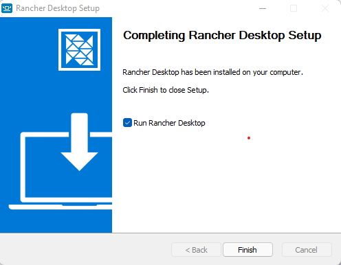

So almost everybody is aware about the fresh new Docker Desktop license change. For those who are out of this new, since the last Aug 31, Docker changed it’s Docker Desktop license model and that’s the main changes we need to be concerned:
- Docker Desktop remains free for small businesses (fewer than 250 employees AND less than $10 million in annual revenue), personal use, education, and non-commercial open source projects.
- It requires a paid subscription (Pro, Team or Business), starting at $5 per user per month, for professional use in larger businesses. You may directly purchase here, or share this post and our solution brief with your manager.
- While the effective date of these terms is August 31, 2021, there is a grace period until January 31, 2022 for those that require a paid subscription to use Docker Desktop. All the details about the new license model can be checked out on it’s Docker Subscription Service Agreement
So, right now, many companies are looking into the available subscription options as they users (most Developrs and Infrastructure teams) already have a working envrionment where Docker Desktop is a necessary tool. Even if the price is not a entry barrier, some companies may have some difficult in order to choose the right subscription package, and others (mostly outside of the U.S.) may not be able to subscribe into the new model.
Altough I think Docker Desktop features still worths a USD 7 a month (billed annualy), it’s always great to known we are not forced to stay binded to a commercial sollution from Docker in order to be able to Build and Try containers on our local environment, and that’s where Rancher Desktop cames to the rescue.
Rancher Desktop
We can define Rancher Desktop as a Open Source desktop application avaible to Windows and Mac, where one may Build and Run containers, and also have a Kubernetes environment, just as it can be done on Docker Desktop. Rancher Desktop run’s over containerd, an industry standard for running container, and provides a K3S install in order to offers a Kubernets environment.
How it works?

Rancher Desktop uses WSL v2 on Windows and QEMU on Mac and Linux to provide a Container Runtime (Containerd) and a Kubernetes Environment (K3S). It provides the necessary tools to manage Kubernetes (kubectl) and to install applications over it (helm), as well as to build and manage Containers (Containerd). It’s includes nerdctl, a drop-in replacement for the docker command.
Containerd
Containerd is a official CNCF project aimed to manage the entire container lifecycle, from image pulling, going through network and storage layers and all the needed resources in order to correctly run a containter into an host, and eventually pushing it to a remote registry. It’s available to Linux, Windows and Mac. More information can be found on the project’s page https://containerd.io/
Kubectl
Kubectl is the official tool to manage Kubernetes clusters from it’s API and is available to Linux, Windows and Mac. More information can be found on Kubernetes page https://kubernetes.io/docs/tasks/tools/
Helm
Helm, also known as Helm Charts is a kind of Package Manager for Kubernetes. Helm provides a easy and structured way to share a Kubernetes Applications and fully manage all it’s lifecycle, from the dependencies installation, setup and upgrade, even on complex applications. Helm is also held by CNCF and more information can be found on it’s project’s official page https://helm.sh/
K3S
K3S is a lightweit Kubernetes distribution aimed to IoT and Edge Computing, packaged on a single binary that can run on small systems like Raspberry Pi and lot’s of other systems based on X86_6 adn ARM architecture.
Creating a Kubernetes cluster with K3S is as easy as running k3s server
Nerdctl
Nerdctl is a Docker-compatible CLI for containerd. It has the same syntax for the most used docker commands like nerdctl run and nerdctl build but also provides native support to docker-compose yaml files with the nerdctl compose command.
I’ts available to Linux, Windows and Mac, and more information can be found at it’s GitHub project page https://github.com/containerd/nerdctl
Install
Rancher Desktop can be downloaded directly from it’s releases page on Github. From the moment of writhing this post the latest available version is v0.6.0 which is available to Windows, Linux and Mac. White it’s considered as a Pre-release, it works pretty well as a Docker Desktop replacement.
Installing it on all the supported OS’s is preety straightforward but on this guild we will cover only the Windows setup as it’s my main OS.
-
Download it from it’s v0.6.0 release. You may look on the releases page for an updated release.
-
If you still have Docker Desktop running on your computer, it’s time to uninstall it or at least to terminate it and disable it on System Startup.
-
Openup the the download file and follow the Wizard.

-
After the install, it will automatically open, and ask to select a Kubernetes version
-
Then, it will start to download and install Kubernetes
At the end, we’ll have a fully working Kubernetes K3S cluster setup with minimal effort. On the next steps we’ll check out how to build and run some containers. It’s worth to mention that while the commands are run on a PowerShell session, it’s only for a proof of concept and they can be run on a WSL linux session excactly on the same way, so using PowerShell or a Linux Shell like Bash or ZSH is just a matter of taste.
Docker essentials
As our main purpose is to replace Docker Desktop, let’s check out if the essentials Docker features are working fine on Rancher Desktop.
Building and running a container
A great way to test nerdctl tool is to build and run a small project called rancher-demo.
This project Dockerfile will build a go application and altough it’s aimed to show the Rancher capabilities of managing a Kubernetes cluster, it’s enough to test a basic container lifecycle.
git clone https://github.com/oskapt/rancher-demo.git
cd rancher-demo
nerdctl build -t mybuild .
nerdctl run --rm -p 8081:8080 mybuild
Let’s see these commands in action:
We can go and access http://localhost:8081 which will bring us something like the following:
If we need to push our image to a remote registry we can do it as in with in docker command:
nerdctl login -u myusername
nerdctl push
nerdctl pull
Docker Compose
For those who just need to try a simple container based stack, or just don’t need or don’t want to use a fully Container Orchestrator such a Kubernetes, there’s always the option to use Docker Compose to manage the stack in a simple way.
For our demo purpose we’ll use the Wordpress sample from Docker website, taken on (https://docs.docker.com/samples/wordpress/)
I setup a GitHub repository with the docker-compose.yml file, so to run this setup will be as easy as running this following commands:
git clone https://github.com/kodeworxx/wordpress-demo.git
cd wordpress-demo
nerdctl compose up
The output will be similar for the following:
The initialization is complete as long as we have the following line in the standard out:
db_1 |2021-11-13T02:09:57.264035Z 0 [System] [MY-010931] [Server] /usr/sbin/mysqld: ready for connections. Version: '8.0.27' socket: '/var/run/mysqld/mysqld.sock' port: 3306 MySQL Community Server - GPL.
Now we can find a Wordpress installation webpage at (http://localhost:8080) like this one:
And, if we go through the install process, we will have a working website in a few minutes:

We can stop the running stack pressing Ctrl + C and then we can delete the stack with
nerdctl compose down
Kubernetes
We have already looked at Kubernetes before and we know that Rancher Desktop brings K3S.
To make sure our Kubernetes cluster is looking fine, we can use kubectl to check access to our cluster.
In order to do it, a valid kubeconfig file and also a kubectl command are needed, but thanks to Rancher Desktop, those are already setup.
Let’s take a look on the output of some common usage for kubectl.
Deploying a POD
Deploying a simple POD for tests purpose is a very simple task. With our Wordpress demo we can achive it with:
kubectl apply -f wordpress-stack-emptydir.yaml
And get some status with:
kubectl get pods -w
kubectl logs -f pod/wordpress-stack --all-containers
kubectl get all
kubectl get ingress
Finally, we can remove our POD with:
kubectl delete -f wordpress-stack-emptydir.yaml
Let’s take a look on those commands output:
Now we can access our Wordpress through the NodePort 30080 on (http://localhost:30080) or through the Ingress on (http://wordpress.localhost)
It’s important to notice that the stack configured through the wordpress-stack-emptydir.yaml is for tests purpose only and no data will be persisted. For a Production environment we should separate the Database and the Application in different Pods, and use other Kubernetes resources like Deployments, StatefulSets, PersistentVolumes, etc.
For a local Development environment we can make the data persistent using a hostPath like the one in the wordpress-stack-peristent.yaml.
Now we’ll have our data persisted even after delete the stack.
It could be useful if we point the hostPath to a local directory through the mountpoints off our WSL
volumes:
- name: wp-volume-db
hostPath:
path: /mnt/c/Users/myLogin/Documents/myProject
type: DirectoryOrCreate
Conclusion
Through this post we have found that Rancher Desktop is a great solution to replace Docker Desktop.
We have saw that Rancher Desktop stack enable us to do almost everything we can do with Docker Desktop, like pull, build and run standalone Containers as well as to deploy Docker Compose based Stacks. Also, Rancher Desktop cames with a built-in K3S setup which allow us to deploy Kubernetes based Stacks, and algouth we have not covered Helm Charts on this post, it’s also posible to deploy Helm packaged Applications, and Rancher Desktop already provides the helm binary.
Hope this post has bringed some light on how to setup a simple but funcitional local Development environment without having to worry about commercial licenses.
See you in a next post!